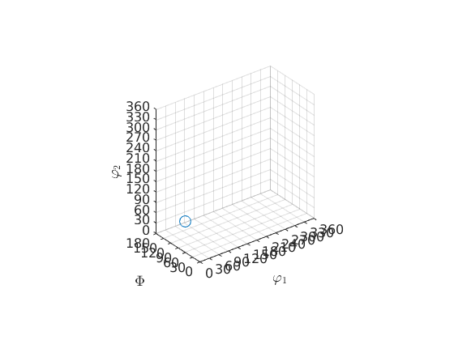

This section describes the class rotation and gives an overview on how to work with rotations in MTEX.
Open in Editor
Contents
Class Description
The class rotation is an inheritance of the class quaternion and allow to work with rotations as with matrixes in MTEX.
SUB: Euler Angle Conventions
There are several ways to specify a rotation in MTEX. A well-known possibility are the so called Euler angles. In texture analysis the following conventions are commonly used
- Bunge (phi1,Phi,phi2) - ZXZ
- Matthies (alpha,beta,gamma) - ZYZ
- Roe (Psi,Theta,Phi)
- Kocks (Psi,Theta,phi)
- Canova (omega,Theta,phi)
Defining a Rotation by Bunge Euler Angles
The default Euler angle convention in MTEX are the Bunge Euler angles. Here a rotation is determined by three consecutive rotations, the first about the z-axis, the second about the y-axis, and the third again about the z-axis. Hence, one needs three angles to define an rotation by Euler angles. The following command defines a rotation by its three Bunge Euler angles
o = rotation.byEuler(30*degree,50*degree,10*degree)
o = rotation
size: 1 x 1
Bunge Euler angles in degree
phi1 Phi phi2 Inv.
30 50 10 0
Defining a Rotation by Other Euler Angle Conventions
In order to define a rotation by a Euler angle convention different to the default Euler angle convention you to specify the convention as an additional parameter, e.g.
o = rotation.byEuler(30*degree,50*degree,10*degree,'Roe')
o = rotation size: 1 x 1 Bunge Euler angles in degree phi1 Phi phi2 Inv. 120 50 280 0
Changing the Default Euler Angle Convention
The default euler angle convention can be changed by the command setpref, for a permanent change the mtex_settings should be edited. Compare
setMTEXpref('EulerAngleConvention','Roe') o
o = rotation size: 1 x 1 Roe Euler angles in degree Psi Theta Phi Inv. 30 50 10 0
setMTEXpref('EulerAngleConvention','Bunge') o
o = rotation size: 1 x 1 Bunge Euler angles in degree phi1 Phi phi2 Inv. 120 50 280 0
SUB: Other Ways of Defining a Rotation
The axis angle parametrisation
A very simple possibility to specify a rotation is to specify the rotational axis and the rotational angle.
o = rotation.byAxisAngle(xvector,30*degree)
o = rotation
size: 1 x 1
Bunge Euler angles in degree
phi1 Phi phi2 Inv.
0 30 0 0
Four vectors defining a rotation
Given four vectors u1, v1, u2, v2 there is a unique rotations q such that q u1 = v1 and q u2 = v2.
o = rotation.map(xvector,yvector,zvector,zvector)
o = rotation
size: 1 x 1
Bunge Euler angles in degree
phi1 Phi phi2 Inv.
90 0 0 0
If only two vectors are specified the rotation with the smallest angle is returned that maps the first vector onto the second one.
o = rotation.map(xvector,yvector)
o = rotation
size: 1 x 1
Bunge Euler angles in degree
phi1 Phi phi2 Inv.
90 0 0 0
A fibre of rotations
The set of all rotations that rotate a certain vector u onto a certain vector v define a fibre in the rotation space. A discretisation of such a fibre is defined by
u = xvector; v = yvector; o = rotation(fibre(u,v))
o = rotation size: 1000 x 1
Defining a rotation by a 3 times 3 matrix
o = rotation.byMatrix(eye(3))
o = rotation
size: 1 x 1
Bunge Euler angles in degree
phi1 Phi phi2 Inv.
0 0 0 0
Defining a rotation by a quaternion
A last possibility is to define a rotation by a quaternion, i.e., by its components a,b,c,d.
o = rotation(quaternion(1,0,0,0))
o = rotation
size: 1 x 1
Bunge Euler angles in degree
phi1 Phi phi2 Inv.
0 0 0 0
Actually, MTEX represents internally every rotation as a quaternion. Hence, one can write
q = quaternion(1,0,0,0) o = rotation(q)
q = Quaternion
size: 1 x 1
a b c d
1 0 0 0
o = rotation
size: 1 x 1
Bunge Euler angles in degree
phi1 Phi phi2 Inv.
0 0 0 0
SUB: Calculating with Rotations
Rotating Vectors
Let
o = rotation.byEuler(90*degree,90*degree,0*degree)
o = rotation
size: 1 x 1
Bunge Euler angles in degree
phi1 Phi phi2 Inv.
90 90 0 0
a certain rotation. Then the rotation of the xvector is computed via
v = o * xvector
v = vector3d size: 1 x 1 x y z 0 1 0
The inverse rotation is computed via the backslash operator
o \ v
ans = vector3d size: 1 x 1 x y z 1 0 0
Concatenating Rotations
Let
rot1 = rotation.byEuler(90*degree,0,0); rot2 = rotation.byEuler(0,60*degree,0);
be two rotations. Then the rotation defined by applying first rotation one and then rotation two is computed by
rot = rot2 * rot1
rot = rotation
size: 1 x 1
Bunge Euler angles in degree
phi1 Phi phi2 Inv.
0 60 90 0
Computing the rotation angle and the rotational axis
Then rotational angle and the axis of rotation can be computed via then commands angle(rot) and axis(rot)
angle(rot)/degree axis(rot)
ans =
104.4775
ans = vector3d
size: 1 x 1
x y z
0.447214 -0.447214 0.774597
If two rotations are specified the command angle(rot1,rot2) computes the rotational angle between both rotations
angle(rot1,rot2)/degree
ans = 104.4775
The inverse Rotation
The inverse rotation you get from the command inv(rot)
inv(rot)
ans = rotation
size: 1 x 1
Bunge Euler angles in degree
phi1 Phi phi2 Inv.
90 60 180 0
SUB: Conversion into Euler Angles and Rodrigues Parametrisation
There are methods to transform quaternion in almost any other parameterization of rotations as they are:
- [[quaternion.Euler.html,Euler(rot)]] in Euler angle
- [[quaternion.Rodrigues.html,Rodrigues(rot)]] % in Rodrigues parameter
[alpha,beta,gamma] = Euler(rot,'Matthies')
alpha =
4.7124
beta =
1.0472
gamma =
3.1416
SUB: Plotting Rotations
The plot function allows you to visualize an rotation by plotting how the standard basis x,y,z transforms under the rotation.
plot(rot)
Complete Function list
| byAxisAngle | define rotations by rotational axis and rotational angle |
| byEuler | define rotentations by Euler angles |
| byMatrix | define rotations by matrices |
| byRodrigues | define rotations by Rodrigues vectors |
| cat | implement cat for rotation |
| char | quaternion to char |
| display | standart output |
| dot | compute rot1 . rot2 |
| dot_outer | |
| line | draw rotations connected by lines |
| load | import orientation data from data files |
| map | define rotations by pairs of vectors |
| matrix | quaternion to direction cosine matrix conversion |
| mldivide | o \ v |
| mtimes | r = a * b |
| permute | overloads permute |
| power | r.^n |
| project2FundamentalRegion | projects rotation to a fundamental region |
| repmat | overloads repmat |
| reshape | overloads reshape |
| rotation | defines an rotation |
| subSet | indexing of rotation |
| subsasgn | overloads subsasgn |
| subsref | overloads subsref |
| times | r = a .* b |
| transpose | array of rotations |
| uminus | implements rotation |
| unique | disjoint list of rotations |